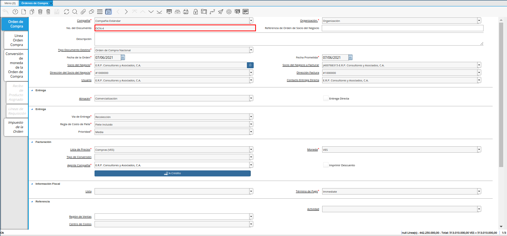
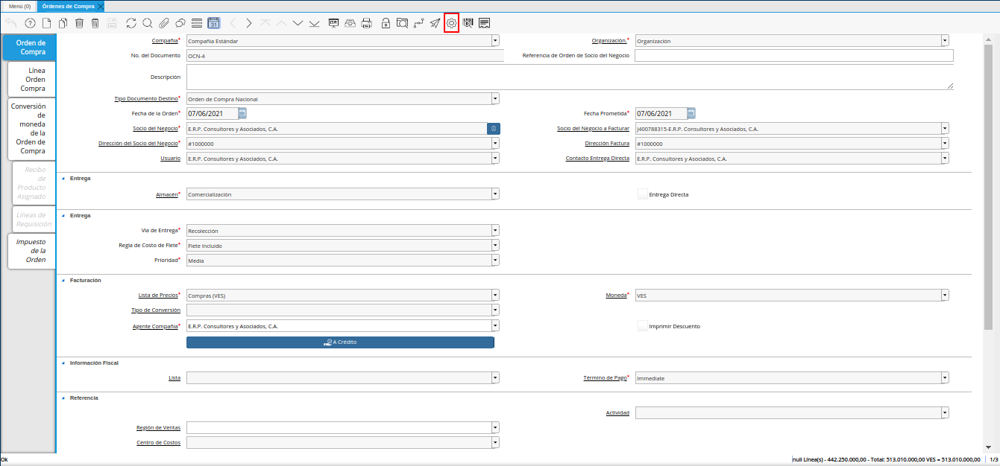
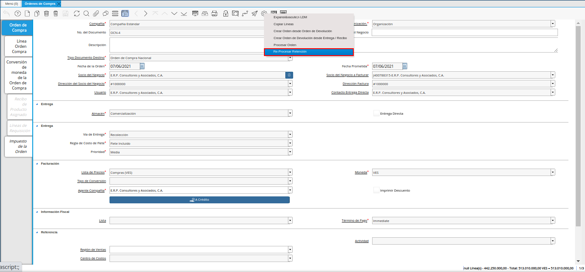
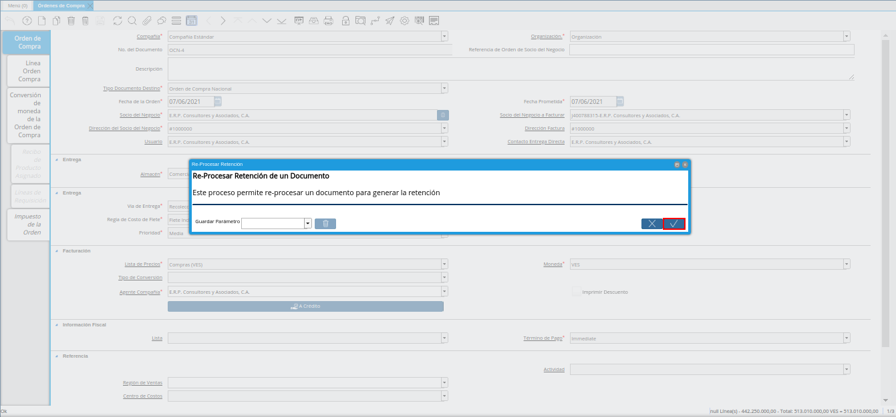
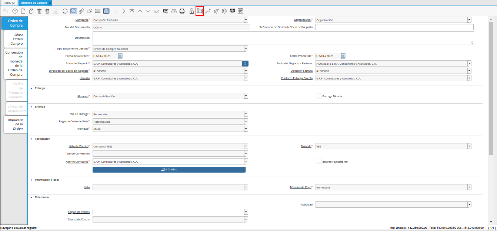
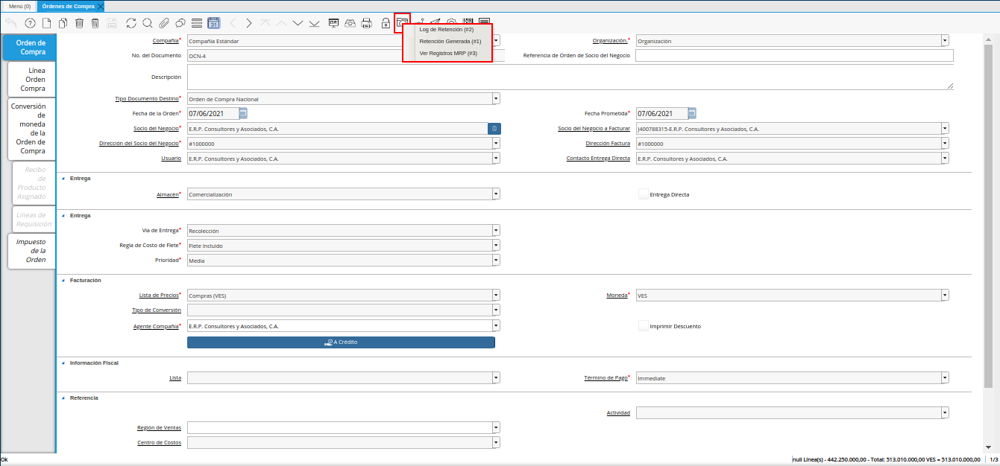
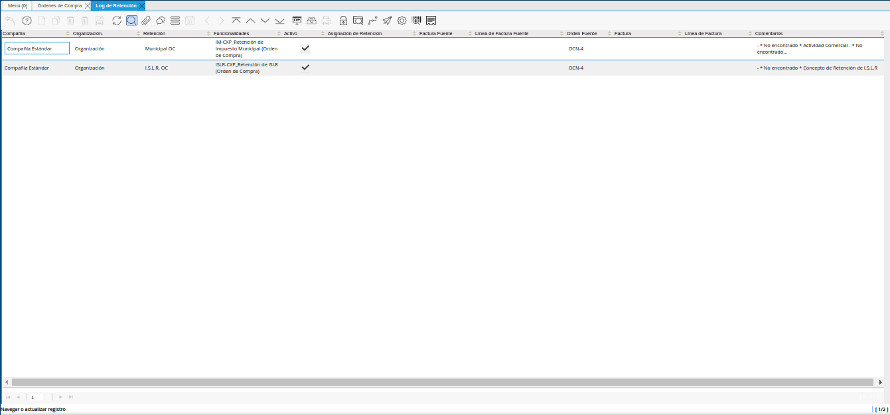
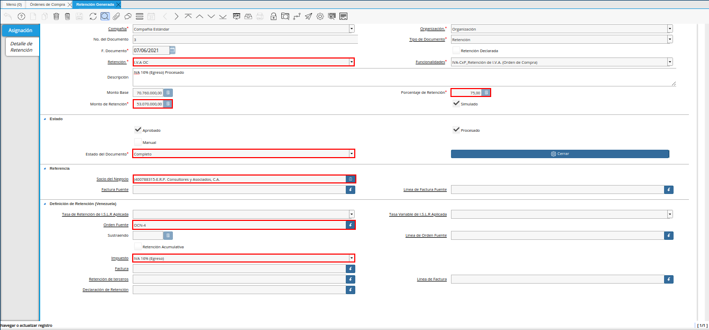

Retenciones Estimadas de Orden de Compra
Realice el procedimiento regular para registrar una orden de compra en ADempiere.

Imagen 1. Registro de Orden de Compra
Note
Si desconoce el procedimiento regular para generar en ADempiere un documento de orden de compra, puede consultar el material Órdenes de Compra.
Luego de completar el registro de la orden de compra, seleccione el icono “Proceso” ubicado en la barra de herramientas de ADempiere.

Imagen 2. Icono Proceso
Seleccione la opción “Re-procesar Retención”, en el menú desplegado por el icono “Proceso”.

Imagen 3. Opción Re-procesar Retención
Podrá visualizar la ventana “Re-procesar Retención”, donde debe seleccionar la opción “OK” para ejecutar el proceso.

Imagen 4. Ventana Re-procesar Retención
En la barra de herramientas seleccione el icono “Visualiza Detalle” para apreciar donde es usado el documento, en este caso la orden de compra.

Imagen 5. Icono Visualiza Detalle
Podrá apreciar el menú desplegado por el icono “Visualiza Detalle”, el mismo muestra los documentos donde es utilizada la orden de compra.

Imagen 6. Menú del Icono Visualiza Detalle
La opción “Log de Retención” muestra el log de la retención no aplicada a la orden de compra número “OCN-4” seleccionada para el ejemplo.

Imagen 7. Opción Log de Retención
La opción “Retención Generada” muestra el documento de estimación de retención aplicado a la orden de compra número “OCN-4” seleccionada para el ejemplo.

Imagen 8. Opción Retención Generada
Warning
ADempiere le genera al usuario por medio del icono “Visualiza Detalle”, las alertas donde indica cuales fueron las retenciones aplicadas (Retención Generada) y cuales retenciones no fueron aplicadas (Log) según la configuración que tiene un socio del negocio determinado.